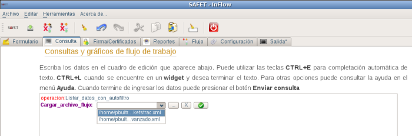
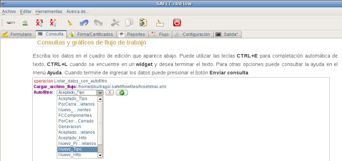
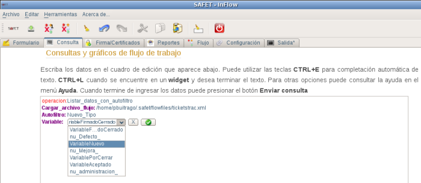
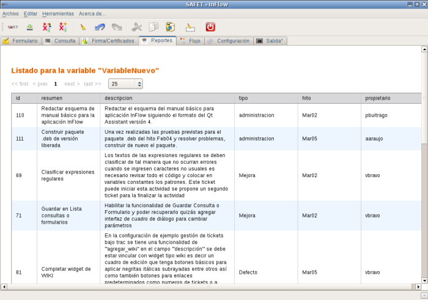

Listar_datos_con_autofiltro
Para listar la información de los tickets debe seleccionar el documento de flujo de trabajo a consultar, debe hacer click sobre el campo
cargar_archivo_flujo* del menú inteligente, debe aparecer en el área de cuadro la linea de texto operacion:Cargar_archivo_flujo junto con un botón de selección para marcar el documento de flujo de trabajo a consultar (ver figura 5S3.2.2-3). los documentos de flujo de trabajo por omisión se deben guardar en la ruta {/home/usuario}/.safet/flowfiles/ (en este ejemplo el usuario puede sustituirse por pbuitrago). Debe ser incluido en el archivo de configuración safet.conf que se encuentra en el directorio /home/usuario/.safet/safet.conf en la sección “ [Widgets] ” (ver figura 5S3.2.2-4)

Figura 5S3.2.2-3. Seleccionar el documento de flujo de trabajo a consultar

Figura 5S3.2.2-4. Archivo
safet.conf, sección [ Widgets ] documentos de flujo de trabajo
En este ejemplo se tiene incluido en el archivo
safet.conf solo dos documentos de flujo de trabajo (ticketstrac.xml y ticketstracavanzado.xml) luego de seleccionar el documento de flujo de trabajo a consultar se click sobre el campo Autofiltro del menú inteligente, y en el área de cuadro de edición debe aparecer la linea de texto Autofiltro, junto con un botón de selección para marcar el autofiltro que va a utilizar (ver figura 5S3.2.2-5), luego de seleccionar el Autofiltro se click sobre el campo Variable* del menú inteligente, y en el área de cuadro de edición debe aparecer la linea de texto Variable, junto con un botón de selección para marcar el estado que quiere listar (ver figura 5S3.2.2-6), y hace click en el botón enviar, si no presento problema, se muestra en la parte inferior izquierda del cuadro de dialogo el mensaje:
Consulta fue exitosa....ok!
Ver reporte
(ver figura 5S3.2.2-7).
Este procedimiento genera un reporte de las variables con un determinado autofiltro que se encuentra en el estado seleccionado ver figura (ver figura 5S3.2.2-8)
Ver reporte
(ver figura 5S3.2.2-7).
Este procedimiento genera un reporte de las variables con un determinado autofiltro que se encuentra en el estado seleccionado ver figura (ver figura 5S3.2.2-8)

Figura 5S3.2.2-5. Selección del autofiltro

Figura 5S3.2.2-6. Selección del estado a consultar

Figura 5S3.2.2-7. Mensaje, resultado de la consulta

Figura 5S3.2.2-8. Reporte de consulta de las variables en un determinado autofiltro y estado